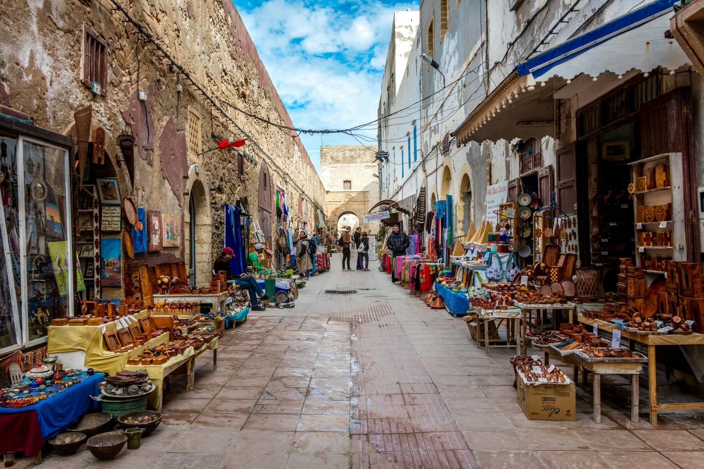
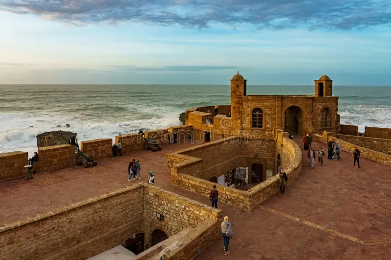
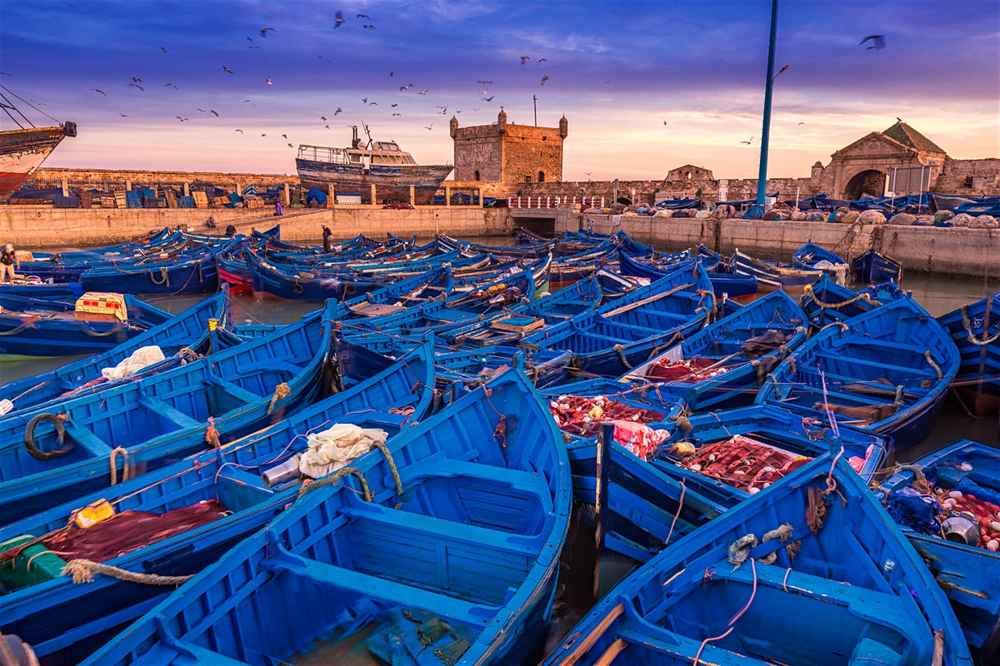
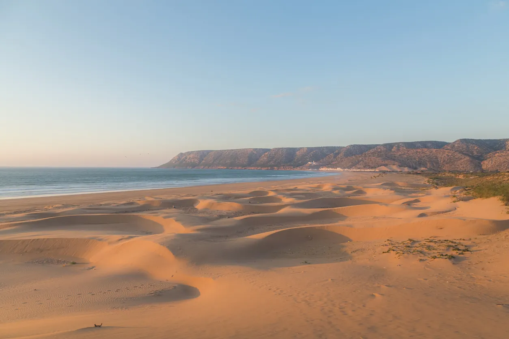
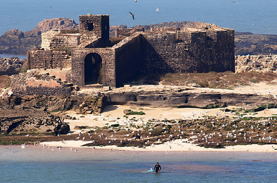

À propos d’Essaouira
Surnommée "la ville des alizés", Essaouira séduit par son charme authentique, sa médina classée au patrimoine mondial de l’UNESCO et son atmosphère artistique. La ville est un mélange harmonieux d’histoire, de culture et de paysages maritimes sublimes.
Faits rapides
- Population : ~77k
- Région : Marrakech-Safi
- Climat : Océanique, doux toute l'année
- Spécialité : Vent, surf et artisanat du bois de thuya
Culture
Essaouira est une ville d’artistes, de musiciens et d’artisans. Elle accueille des festivals renommés comme le Festival Gnaoua et possède une identité culturelle profondément ancrée entre tradition marocaine et influences européennes.
La ville est réputée pour son ambiance paisible et son rythme de vie détendu.
Art & Musique
Festival Gnaoua, galeries d’art, artisans locaux.
Mer & Vent
Surf, kitesurf, spots mondialement connus.
Gastronomie
Poissons frais, fruits de mer, cuisine locale.
Patrimoine
Médina UNESCO, remparts, canons portugais.
Sites incontournables

La Médina d’Essaouira
Classée UNESCO, ruelles blanches et bleues au charme authentique.

La Skala de la Kasbah
Remparts historiques avec vue imprenable sur l'Atlantique.

Le Port d’Essaouira
Célèbre pour ses barques bleues et son ambiance maritime.

Plage d’Essaouira
Longue plage parfaite pour le surf et la détente.

Île de Mogador
Réserve naturelle face à la ville, refuge d’oiseaux rares.